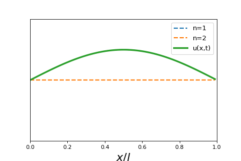

4.5.2. Wave Particle Duality and the Classical Wave Equation#
4.5.2.1. Motivation#
We have already used the concept that light and matter both exhibit aspects of wave-like and particle-like behavior. de Broglie formalized this hypothesis in his famous wavelength equation. Additionally, we will discuss how waves are treated classically.
4.5.2.2. Learning Goals#
After working through these notes, you will be able to:
Use the de Broglie wavelength equation to convert between wavelength and particle mass
Solve the classical wave equation using the methods of separation of variables
4.5.2.3. Coding Concepts#
The following coding concepts are used in this notebook:
4.5.2.4. Matter has wavelike properties#
Both light and matter have wave-like and particle-like properties. This is more readily observed in light. White light splitting into colors of the visible spectrum when shone through a prism is an example of light displaying wave-like character. The photoelectric effect, where a photon of light with energy \(h\nu\) collides with an electron causing it to leave the metal if the incident energy is larger than the work function, is an example of light displaying matter-like character. In 1925, de Broglie reasoned that both light and matter display this behavior. Whats more, the realatonship between wavelength and momentum derived for light by Einstein also applies to matter
4.5.2.4.1. Example: The de Broglie Wavelength of Matter#
Compute the de Broglie Wavelength of the following two objects:
An electron traveling at \(3\times10^{5}\) m\(\cdot\)s\(^{-1}\)
A baseball (5.0 oz) traveling at 90 mph
4.5.2.4.2. Solution: The de Broglie Wavelength of Matter#
An electron traveling at \(3\times10^5\) m\(\cdot\)s\(^{-1}\). For this we compute the momentum of the electron:
The de Broglie wavelength is then
For a baseball traveling at 90 mph
print(9.109e-31*3e5)
print(6.626e-34/(9.109e-31*3e5))
2.7326999999999997e-25
2.424708164086801e-09
From this example we see that, at this velocity, the wavelength of electron motion is of a similar magnitude to the radius of hydrogen atom orbits. This demonstrates that the wavelike character of the electron is important for its behavior.
The wavelength of the baseball, however, is miniscule, even for atomic distances. Thus, the wavelike behavior of a baseball is irrelevant for its behavior.
The wavelike behavior of electrons is not only important for determining the structure and behavior of atoms and molecules. It is utilized in electron microscopes and can display similar wavelike defraction patterns to X-rays.
4.5.2.5. The 1-D Wave Equation#
The behavior and physics of waves might be foreign to us. Waves are, however, readily treated using classical mechanics. Consider, for example, a string of tied between two objects a length \(l\) apart. We consider the motion of the string (i.e. strumming a guitar string). The amplitude of the motion normal to the direction of the wave is described by a time dependent function \(u(x,t)\) where \(x\) is the position along the end separation vector and \(t\) is time. The classical wave equation relates the second derivative of the function \(u\) in position and in time
where \(v\) is the linear velocity of the wave. This is a linear partial differential equation: linear because the second derivatives only appear to the first power and there are not cross partial derivatives and partial because derivatives of the same function w.r.t different variables show up in the same equation.
The above equation is subject to the following boundary conditions:
Since the string is anchored at both ends.
Show code cell source
import numpy as np
import matplotlib.pyplot as plt
%matplotlib inline
# make an array containing domain of wavelengths to consider
x = np.arange(0,np.pi,0.0001)
# setup plot parameters
fig = plt.figure(figsize=(10,5), dpi= 80, facecolor='w', edgecolor='k')
ax = plt.subplot(111)
ax.set_xlabel(r'$x$',size=20)
plt.tick_params(axis='x',labelsize=20)
plt.ylim((0.0,1.05))
# plot quantum result
ax.plot(x,np.sin(x),lw=3)
plt.xlim(0,np.pi)
# ticks
plt.xticks([0,np.pi],[0,'l'])
plt.yticks(ticks=None);
4.5.2.6. Solving the 1-D Wave Equation with Separation of Variables#
The first major step to solve the above differential equation is to assume that the dependence of the two different variables can be separated. Namely that
where \(X(x)\) is some function strictly of \(x\) and \(T(t)\) is another function strictly of \(t\). Substituting this for for \(u\) into the differential equation above yields
Dividing both sides of the above equation by \(u(x,t) = X(x)T(t)\) will complete the separation of variables
Since the left-hand side depends only on \(x\) and the right-hand side depends only on \(t\), and these two coordinates are independent, the only way for this to be achieved is for both sides to be equal to the same constant. That is
Each of these equations can be rewritten as
These are ordinary differential equations that can be solved using standard ODE procedures. We now consider the solutions to these equations for three scenarios
4.5.2.6.1. K =0#
\(K = 0\) is what is called the trivial solution. Namely this solution is such that
This is a mathematically valid solution to our problem but of no physical interest.
4.5.2.6.2. K > 0#
If \(K>0\), we get the following general form for \(X(x)\) and \(T(t)\):
Or you can write this as
which implies that \(y\) is a function that, when you take two derivatives, returns itself times a constant squared. This type of behavior is exhibited by functions of the form \(e^{\alpha x}\) the value of \(\alpha\) needs to be determined. So, we propose that \(y(x) = e^{\alpha x}\) and plug this into the above equation to determine the expression for \(\alpha\).
This means that there are two possible values for \(\alpha\) and thus two possible solutions, \(y(x)\). Namely
In general, when there are two possible solutions for a given differential equation, then any linear combination of these two solutions is also a solution. Thus, it is more complete to write that the solution is
where \(c_1\) and \(c_2\) are constants.
4.5.2.6.3. K < 0#
If \(K<0\), we can set \(K = (ki)^2\) for arbitrary constant \(k>0\). This implies the general form for \(X(x)\) and \(T(t)\):
Or you can write this as
which implies that \(y\) is a function that, when you take two derivatives, returns itself times a constant squared. This type of behavior is exhibited by functions of the form \(e^{\alpha x}\) the value of \(\alpha\) needs to be determined. So, we propose that \(y(x) = e^{\alpha x}\) and plug this into the above equation to determine the expression for \(\alpha\).
This means that there are two possible values for \(\alpha\) and thus two possible solutions, \(y(x)\). Namely
In general, when there are two possible solutions for a given differential equation, then any linear combination of these two solutions is also a solution. Thus, it is more complete to write that the solution is
where \(c_1\) and \(c_2\) are constants.
In this case, we can also recall/recognize that
Using this relationship is can be readily shown that
We will write this general solution as
When we apply the boundary conditions we get that
Finally yielding an \(n\) specific solution of
4.5.2.6.4. Time Dependence#
Now that we have solved the positional dependence equation and found a non-trivial solution we must solve the time dependent portion. Recall that the time dependent differential equation is
where \(K\) is the exact same constant as for the positional part. Thus, for the non-trivial case with \(K<0\) we have
The solutions to this equation are, by analogy with to the position equation,
where \(\omega_n = \frac{n \pi v}{l}\). It can be shown that this can be rewritten as
where \(\phi_n = \tan^{-1}\frac{B_n}{A_n}\).
4.5.2.6.5. Combined General Solution#
The combined specific solution is then
Since and \(u_n\) is a specific solution to the linear differential equation, the general solution is a linear combination of these solutions. Thus, the general solution is
4.5.2.6.6. Example: Linear combination of first two harmonics#
To investigate what these look like, we can look at the sum of the first two harmonics, or first two solutions to the equation above. The function is then
If we assume \(A_1 = A_2 = 1\) we can see plot what these two curves look like as a function of time.

Show code cell source
# make animated gif of first two harmonics
import matplotlib.pyplot as plt
def plot_classical_wave_frame(t, nu, max_n):
a = 1
# setup plot parameters
fig = plt.figure(figsize=(6,4), dpi= 80, facecolor='w', edgecolor='k')
ax = plt.subplot(111)
all_x = np.arange(0,a,0.01)
n = 1
partial_sum = np.sin(n*np.pi*all_x/a)*np.cos(nu*n*t/(2*a))
#ax.plot(all_x,partial_sum,'--',lw=2, label="n=1")
n = 2
partial_sum += np.sin(n*np.pi*all_x/a)*np.cos(nu*n*t/(2*a)+np.pi/2)
#ax.plot(all_x,np.sin(n*np.pi*all_x/a)*np.cos(nu*n*t/(2*a)+np.pi/2),'--',lw=2, label="n=2")
ax.plot(all_x,partial_sum,'-',lw=3, label="sum")
plt.legend(fontsize=12)
ax.set_xlabel(r'$x/a$',size=20)
ax.get_yaxis().set_visible(False)
plt.ylim((-2,2))
plt.xlim((0.0,1.0))
plt.savefig(f'./img/img_{t}.png',
transparent = False,
facecolor = 'white'
)
plt.close()
# make gif
import numpy as np
import imageio
time = np.arange(0,120)
for t in time:
plot_classical_wave_frame(t,0.1,1)
frames = []
for t in time:
#image = iio.imread(f'./img/img_{t}.png')
image = imageio.imread(f'./img/img_{t}.png')
frames.append(image)
imageio.mimsave('./img/classical_wave_three_modes_v03.gif', # output gif
frames, # array of input frames
fps = 10)
/var/folders/t8/kw0bwdw15_g0pj38_ntzjgyc0000gp/T/ipykernel_7621/4279533357.py:36: DeprecationWarning: Starting with ImageIO v3 the behavior of this function will switch to that of iio.v3.imread. To keep the current behavior (and make this warning disappear) use `import imageio.v2 as imageio` or call `imageio.v2.imread` directly.
image = imageio.imread(f'./img/img_{t}.png')